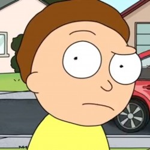

My Profile

Bio
Morty Smith
 Red Dead Redemption 2
Red Dead Redemption 2
Bio
On one of our adventures, Rick and I basically destroyed the whole world, so we bailed on that reality and we came to this one, because in this one, the world wasn’t destroyed, and in this one, we were dead. So we came here and we buried ourselves, and we took their place. And every morning, I eat breakfast 20 yards away from my own rotting corpse.